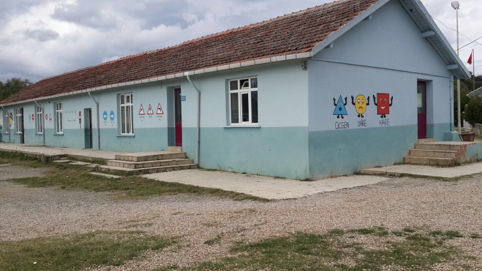
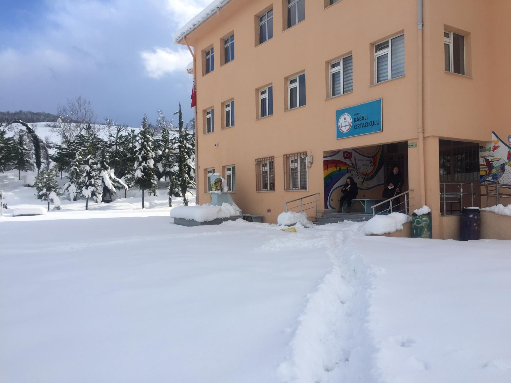
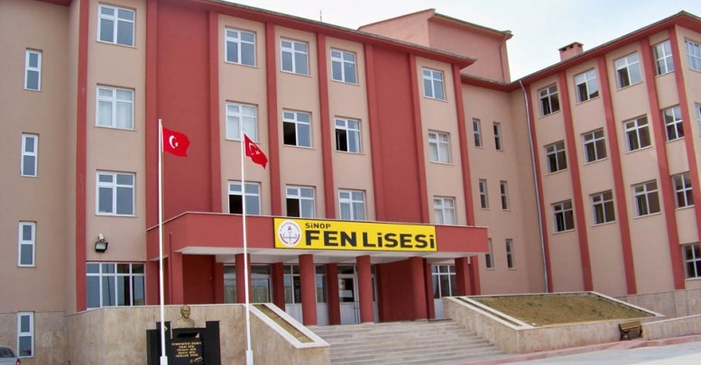

HAYATIM
Adım Zeynep Bezirci. 30.05.2001 tarihinde Sinop'ta 3 kardeşin sonuncusu olarak dünyaya geldim. Bir ablam bir de abim var. Onlara sahip olduğum için çok şanslıyım. Bu yaşıma kadar Sinop'tan başka fazla bir şehire gidemedim. O yüzden hayalim Önce Türkiye'yi sonra da Dünya'yı gezmek oldu. Bulunduğum şehirde merkeze yakın bir köyde yaşıyorum. Gittiğim ilk okul ve ortaokul evime yakin köy okulları oldu ama sınıfımde hep birinciydim. Liseyi de Sinop Fen Lisesinde okudum ve mezun oldum. 1 sene mezuna kaldım diğer sene Sakarya Üniversitesi Bilgisayar Mühendisliği bölümünü kazandım ve şuanda 1. sınıfım.
OKULLARIM

Lala İlköğretim Okulu

Kabalı Ortaokulu

Sinop Fen Lisesi

Sakarya Üniversitesi